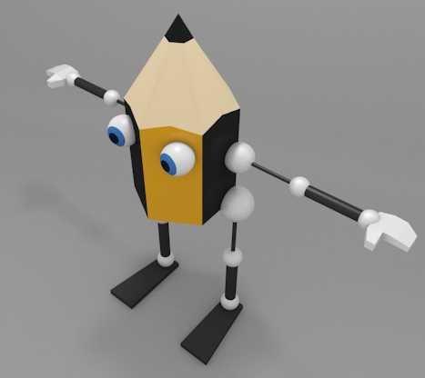

Actividades
1- Keyframes en la Energía
Haz una pequeña animación variando el parámetro de la Energía de una lámpara insertando keyframes.
2- Los ojos de Lapintef
Haz una animación en al que los ojos del personaje Lapintef miren siempre a cámara mientras esta se desplaza. Puede hacer dos cosas:
- Emparentar el puntero mirada con la cámara.
- Eliminar el puntero mirada y que la cámara sea el Objetivo de la restricción de los huesos de los ojos.
3- Adiós
Añade al personaje de Lapintef unos brazos con los que poder expresarse mejor y decir adiós, por ejemplo.
La mano puede ser de carácter sencillo, sin articulaciones en los dedos.
4- Mas botes para la bola
Usa el personaje de la pelota saltarina y haz que se desplace dando botes.
5- juega con los tipos de nodos
Cuando estés manipulando los nodos y sus asas en el Editor de gráficas  prueba a cambiar en Clave/Tipo de asa. Verás que puedes controlar mucho mejor el realismo del bote de la pelota si usas el tipo Vector.
prueba a cambiar en Clave/Tipo de asa. Verás que puedes controlar mucho mejor el realismo del bote de la pelota si usas el tipo Vector.
6- Un padre final para el brazo mecánico
Consigue una buena relación de parentescos para que brazo_inmovil sea el padre final de todo el brazo robótico y la cinemática siga funcionando.
7- Estiramientos en otros objetos
Haz que un cubo o una letra adquiera la capacidad de estirarse en una animación. En función de la malla deberás recurrir a métodos para añadir más vértices.
8- Colores para los huesos
En el panel propio del esqueleto  puedes crear grupos de huesos del mismo modo que haces con las mallas multimateriales para asignar distintos colores. Haz pruebas hasta conseguir dominar este recurso.
puedes crear grupos de huesos del mismo modo que haces con las mallas multimateriales para asignar distintos colores. Haz pruebas hasta conseguir dominar este recurso.